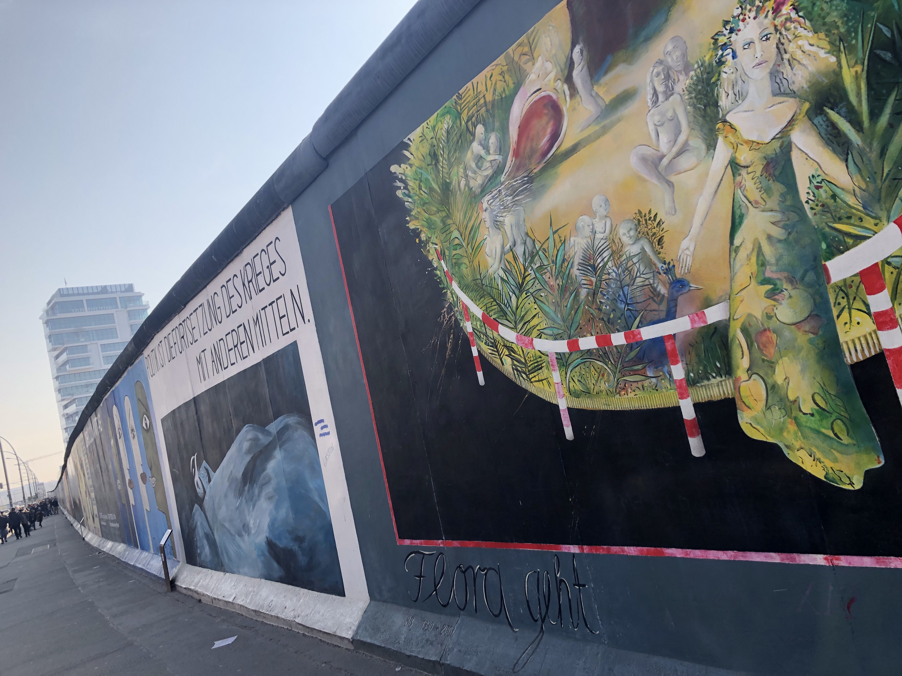

My boyfriend, Harry, and I booked this trip to Berlin around Nov/Dec time last year, but little did we know then that 'the beast from the east' was going to arrive and cause chaos!
My flight was due to leave from Brussels, and surprisingly enough, Brussels was not affected by any of the stormy weather that I'd seen plastered all over the news. As you can see in this pic above it was clear blue skies and sun, but don't let that fool you. The temperature was a consistent '-5 but feel likes -8/-10'.
Still, this was undoubtedly a lot better than what was going on in Glasgow, where Harry was due to fly from. As you probably already know, Glasgow airport was completely closed for a few days due to the snow. I tried to be hopeful, but by Thursday evening (the 2nd of March), I had pretty much accepted that I would be spending the weekend in Berlin alone because we were supposed to meet there the following day. Fortunately, I was wrong! By some miracle, Harry managed to make it to Glasgow airport and although his flight was delayed by an hour or so, he met me in the hostel later that evening!
We decided to go back to the same hostel we stayed in when we last visited Berlin back in June 2017, which is called East Seven and I would highly recommend it. The price is good, the reception staff are friendly, the rooms are very comfortable and the kitchen is great. Plus, it's in a really good location which isn't a far walk from Alexanderplatz, and the nearest metro stop is only a few minutes walk away. 
There are also a lot of great places to eat nearby. On the first night neither of us could be bothered to cook so we went to a pizza place that was literally 2 minutes walk away called 'Standard - Serious Pizza'. Unfortunately, they weren't going to have a free table for another 45 mins so we got our food to takeaway and demolished it in the hostel kitchen. The next day we had some delicious beef bimipbab at a Korean restaurant, 'Gong Gan' next door to the hostel which had been closed the last time we'd been there.
The next day we took the U2 bahn 'Senefelderplatz' into 'Alexanderplatz' and went for a wander. We'd seen most of the centre when we were in Berlin last summer but it was fun to go round the places again, especially the Museum Island. Although, I've got a lot more layers on in these photos than the ones from June...
In addition to Museum Island, we walked to the Brandenburg gate and through the Tiergarten park beyond it. Whilst in the park we could see the river was totally frozen. I tapped it with my foot but there was no way I was going to walk on it because I have no idea how to tell whether it's safe or not. As it turned out it was fine because further on through the park we saw lots of people ice skating, which is pretty cool!
As wonderful as all the sightseeing is, the real reason we chose to go to Berlin was to see the Berlin Philharmonic play Alpine Symphony, which is one of my favourite pieces. We also saw the same orchestra last June but this time it was great being able to dress up a little bit because last time I just had to wear one of the 4 outfits I'd brought travelling with me. The concert was at 7pm and was without a doubt one of the best concerts I've ever been to! At the interval we went down to buy something to eat. Doing this gave me a funny flashback to June when we'd gone to the concert without having dinner and then realised you could only pay cash at the bar. Back then we managed to scrape together enough change between us to get one pretzel to share! I remembered it being delicious and filled with butter but I was worried that maybe it only tasted so good last time because we'd both been so hungry. Thankfully it was just as delicious as I had remembered it. All in all, it was an amazing evening and we had the best time!
The Berlin Philharmonic is also listed as #16 on the top things to do in Berlin on Trip Advisor, and has a comfortable 2331 reviews rating it as 'excellent'. But I always find it fun to read the 'terrible' reviews, and the Berlin Philharmonic has 16 of these on Trip Advisor. I didn't read all 16 because the first few were hilarious enough, with one being titled 'what a racket.' The Berlin Philharmonic is an orchestra, and therefore plays classical music, but it appeared that a few people over the years have gone there without doing any research and expected an 'industrial rave' instead... Not sure if the Berlin Phil deserve a negative review for this because I'm pretty sure the words industrial rave have never been used to advertise any of their concerts. I feel sorry for whoever went there expecting something like that because they must have had quite a shock.


Sunday was our last day in Berlin, but Harry's flight was in the morning so I had the whole day to explore solo before catching my flight at around 6pm. I decided to go the East Side Gallery, a 1316 metre stretch of the wall with numerous murals painted directly on it.
I walked the whole length of it and saw some very inspiring art pieces. There were too many to photograph and it was still bitterly cold so it was best to keep my hands in my pockets for warmth.
This stretch of wall was along the riverside, and it was crazy to see that even the river Spree had been frozen in parts, I don't think I've ever seen so much ice in my entire life! And to be honest I'd happily not see any again, even the memory of this day is making me feel chilly.
After exploring this area, I had a series of undergrounds and buses to the airport, before the final leg of my journey which was making it through Tegel airport and onto my flight. I misjudged how long it would take me to get to the airport and ended up being over 2 and a half hours early. Be warned, it is not necessary to be this early for a flight from Tegel, nor is there much to do there while you wait. Rather than having one main security check before duty free, the airport is a large circle of gates and each gate has its own mini security check. But you can't you through your gate until it is almost time for your flight and there are very few shops or places to buy food. This resulted in 2 very long hours of waiting doing nothing, but I was pretty knackered from all the walking I'd done so it wasn't too bad.
All in all, I had a fantastic weekend in Berlin and it was great to spend some time with Harry - now to continue to catch up on my blog posts starting with my trip to Madrid last weekend!
À bientôt